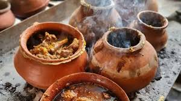
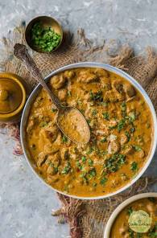
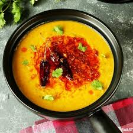
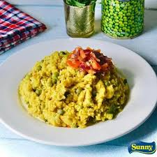

Welcome to Recipes jo mai bana skta hu
I dont know much about cooking but i can do stuff okish i have listed what i could but some things are copy pasted from internet!
Stuff i like or recipes i can make

Ahuna (Champaran) Mutton
This for me is Bihar exactly this i think our cuisine is not al all give the respect it should be given.
View Recipe
Mushroom Masala
i fell in love with this dish cus of my mum she cooks amazing mushroom masala idk how she does it mujse ni banta waisa :(
View Recipe
Dal Tadka
If u ever are not sure about what top eat in a restraurant just oprder this its really hard to get this wrong
View Recipe
Egg Fried Rice
Used to watch unle roger for comedy and ended up liking this dish its great to be honest with you idk why many people dont make this in india quick and easy
View Recipe
Khichdi
Honestly its easy and i can make this any time i dont want to cook just throw stuff in a rice cooker and wait (if u dont have a rice cooked mate u r making yr life difficult)
View Recipe